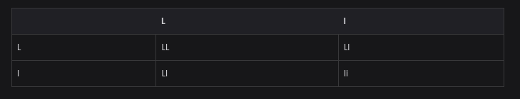
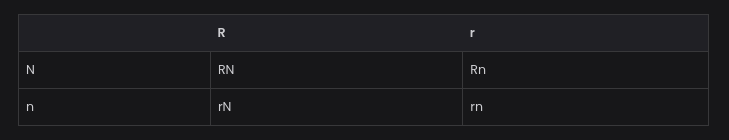

Analiza la cronología de la genética moderna y subraya los cinco acontecimientos que en tu opinión sean más significativos.
1953: Watson y Crick dan a conocer la estructura de doble hélice del Apr
1966: El código genético del ADN es descifrado por completo
1973: Se realizan experimentos en los que se introducen genes de una especie en organismos de otra, obteniendo resultados satisfactorios. Asi se inicia la ingeniería genética.
1982: Se inserta el gen de la hormona del crecimiento de una rata en óvulos fecundados de ratonay asi se obtiene el primer ratón transgénico
1997: Se obtiene el primer mamífero clonado: la oveja Dolly.
Es la molécula que acarrea aminoácidos para la sintesis de proteinas:
ARNt
Los nucleótidos del ADN tienen los siguientes componentes, excepto:
uracilo
Enzima que participa en la replicación del ADN:
ADN polimerasa
El proceso de traducción consiste en:
interpretar la información y producir una proteina
Un gen es:
un segmento de ADN para hacer una proteina.
Nos ha permitido conocer la secuencia del ADN humano:
Proyecto genoma
Técnica para detectar la identidad de una perso- na por medios moleculares:
Huella del ADN
Se utilizan para cortar genes en sitios precisos:
Enzimas de restricción
Organismos a los que se inserta un gen de otra especie:
Transgénicos
Proceso que ha permitido desarrollar productos por la recombinación del ADN
Ingeniería genética
La --- es la forma de fecundación que se presenta en la mayoria de los peces
fecundación externa
La forma de reproducción en la que se produce un pequeño brote que da lugar a un nuevo individuo se conoce como ---
brotación (reproducción asexual)
Los hongos y los helechos se reproducen asexualmente por medio de ---
formación de esporas
En organismos unicelulares como la amiba, la reproducción es por ---
asexualmente por fisión binaria
Los organismos cuyas crías se nutren en el desarrollo embrionario a partir de una placenta se llaman ---
mamíferos placentarios
Una célula que contiene dos juegos de cromosomas es ---
célula diploide
Proceso por el cual se producen las células sexuales ---
meiosis
Organismo que presenta, para cierta característica, un gen dominante y uno recesivo
heterocigoto
Es la manifestación de los genes que se puede observar
fenotipo
Combinación de genes de un organismo que no se puede observar a simple vista
genotipo
Organismo que tiene dos genes recesivos para cierta caracteristica
homocigoto
Es un cambio que se produce en el ADN cuando no se copia correctamente
mutación
Cromosoma caracteristico del sexo masculino. Contiene una cantidad mínima de información
Y
Cientifico que descubrió la herencia ligada al sexo
Thomas Hunt Morgan
Las orejas largas en los elefantes (L) son dominantes con respecto a las cortas (1). ¿Qué probabilidad hay de que una pareja de elefantes heterocigotos (LI) tengan hijos con orejas cortas? Utiliza el cuadro de Punnett y anota tu respuesta.

2. En el ser humano la característica de cabello rizado (R) es dominante con respecto a la de cabello lacio (r), y la de ojos negros (N) domina sobre la de ojos azules (n). Si se casan un hombre y una mujer heterocigotos para ambas características, ¿qué posibilidades tendrán de que sus hijos sean de ojos azules y cabello lacio? Llena este cuadro para resolver el problema. Anota los genotipos y fenotipos de todos los hijos
